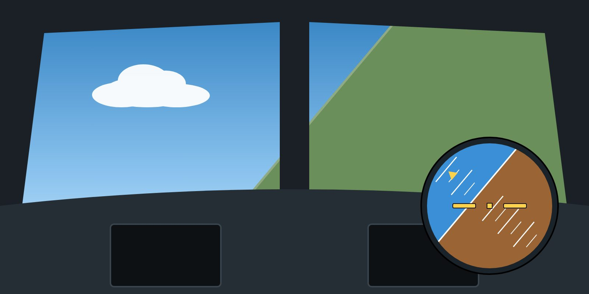

Lesson 02: Upsets and Loss of Control: Definitions
Lesson 2 of 24 · about 7 min
Learning objectives
State the definition of an aeroplane upset.
Distinguish a developing upset from a fully developed upset and from loss of control in flight.
Explain why early recognition is the most effective defence.

More than 45° of bank, unintended — by definition an upset.
What is an upset?
An upset is an undesired aircraft state characterised by unintentional divergences from the parameters normally experienced during line operations or training. In practice, an aeroplane is generally considered to be in an upset when it unintentionally exceeds one or more of these values:
pitch attitude more than 25° nose-up;
pitch attitude more than 10° nose-down;
bank angle more than 45°;
or, within these values, an airspeed inappropriate for the conditions.
The upset thresholds used in ICAO Doc 10011 and the industry training aid. They describe an upset — they are not targets or limits for normal flight.
Developing and developed upsets
An upset does not appear from nowhere. It nearly always begins as a developing upset — a deviation that is growing: speed decaying on approach, bank slowly increasing after an autopilot disconnect, pitch rising in turbulence. At this stage a small, early correction is usually enough.
If the deviation is not detected or corrected, it becomes a developed upset, where large control inputs and a structured recovery are needed. If recovery is not achieved, the result is loss of control in flight (LOC-I): the aircraft departs from controlled flight, often with a stall, and may not be recoverable in the altitude available.
The key idea
The earlier a deviation is recognised, the smaller the correction and the larger the safety margin. Prevention and early recognition are far more effective than any recovery technique.
Stall and upset
A stall can be both a cause and a result of an upset. A stalled aeroplane may roll or pitch uncontrollably; an aeroplane in a nose-high upset may stall. In every case, stall recovery takes priority — you cannot recover the attitude while the wing is stalled (Lesson 19).
Why upsets are dangerous
They are rare, so most pilots have little or no real experience of them.
They often arrive with startle and surprise, which slow down recognition and decision-making (Lesson 14).
They may happen at night, in cloud or with failed instruments, where visual references are missing.
The wrong instinctive reaction — such as pulling back when the aeroplane is stalled — can make them worse.
Key takeaways
Upset: unintentional pitch above 25° nose-up or 10° nose-down, bank above 45°, or inappropriate speed.
Developing upsets need small, early corrections; developed upsets need a structured recovery.
Stall recovery always takes priority over attitude recovery.
Knowledge check
Which of these situations meets the definition of an upset?
A 30° bank turn in a holding pattern
Unintentional bank of 55° after an autopilot disconnect
A 15° nose-up pitch during a normal take-off
A 3° glide path on approach
Answer: B. An unintentional bank angle greater than 45° is an upset. The other situations are normal, intended manoeuvres.
Training material only. It does not replace the Aircraft Flight Manual, FCOM, QRH, MEL or the Domestic Airlines Operations Manual, which always take precedence.